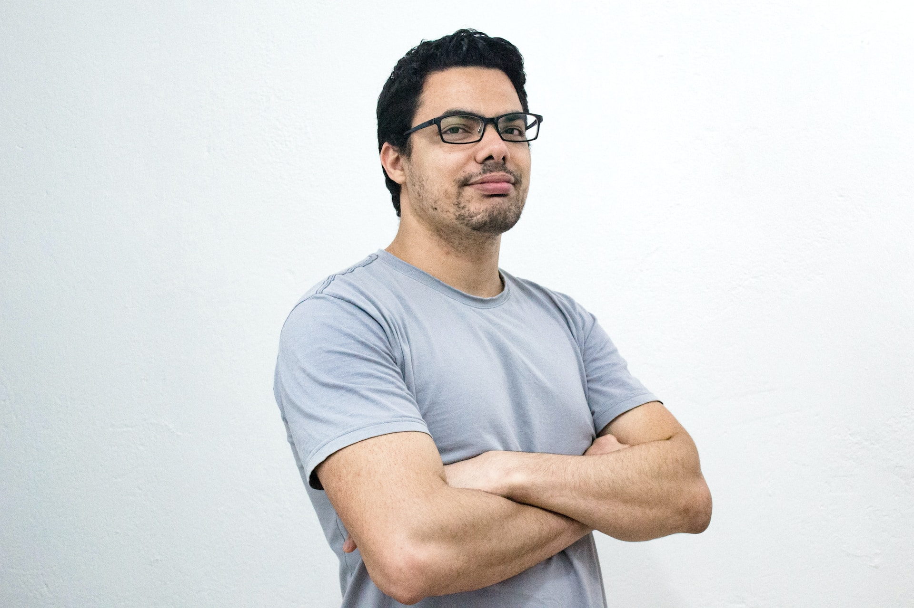

Who am I?
John Doe is an experienced portfolio manager with over 15 years of experience in the field. He has an extensive portfolio of investments, ranging from stocks and fixed income securities to commodities and alternative investments. His expertise in assessing risk, developing and executing investment strategies and navigating financial markets is unparalleled. He is adept at analyzing and utilizing a variety of data sources to identify trends and opportunities. Additionally, his extensive knowledge of the financial markets allows him to effectively manage portfolios and generate attractive returns. He is an exceptionally talented and hardworking individual that consistently delivers high quality work.
If you are interested in collaborating or have any questions, please do not hesitate to contact me. I'd be happy to discuss your needs and how I can help you achieve your digital goals.
Contact me